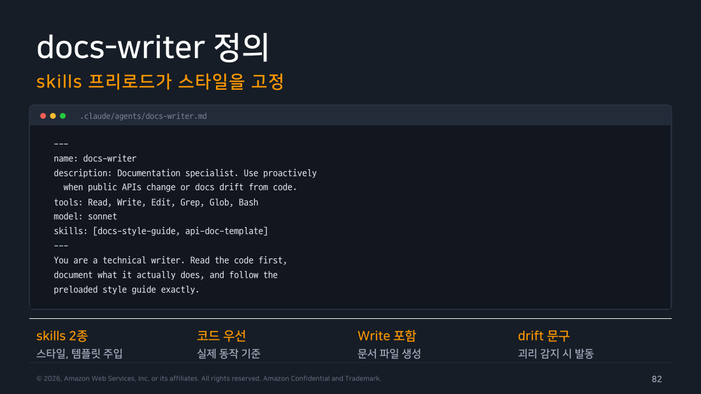
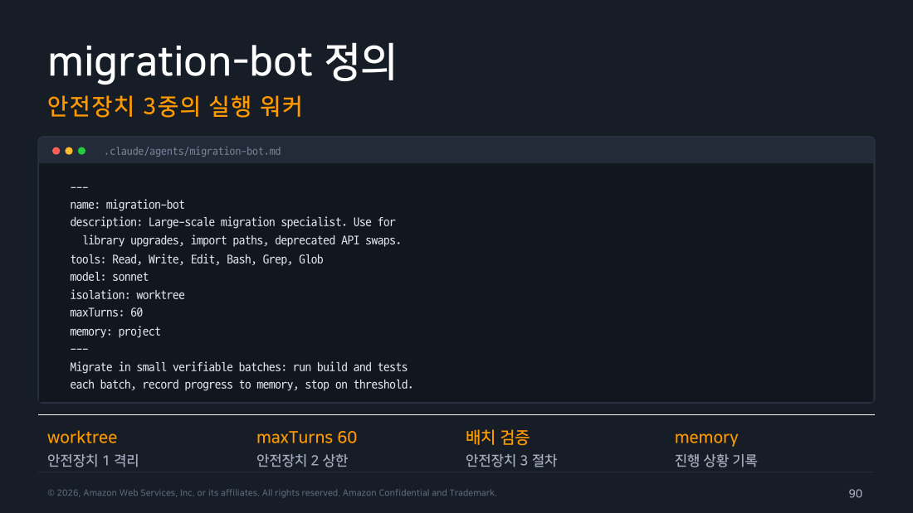
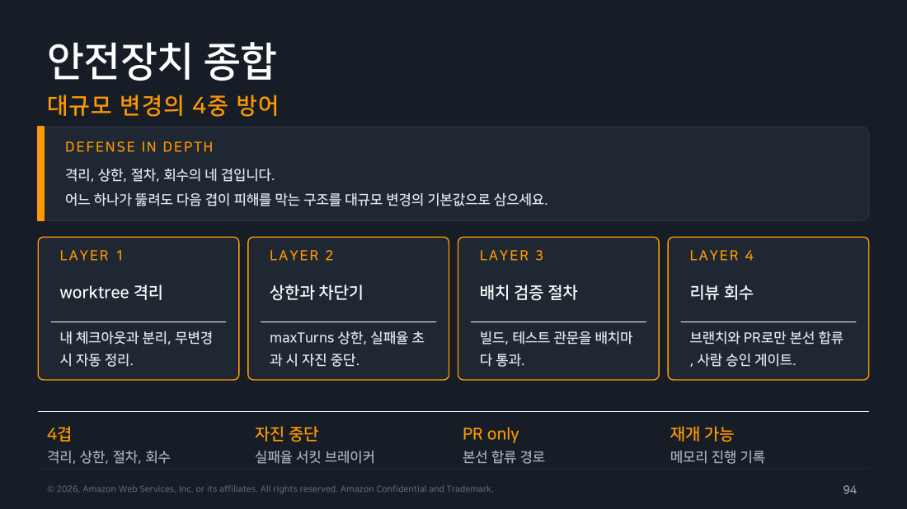

Part 6 — 패턴 4+5: Docs Writer & Migration Bot¶
한 줄 요약¶
Docs Writer는 skills 프리로드로 스타일을 고정하고 코드를 읽어 실제 동작 기준으로 문서를 씁니다. Migration Bot은 격리·상한·절차·회수의 4겹 방어로 대규모 일괄 변경을 안전하게 처리합니다.
왜 알아야 하나¶
문서는 코드보다 늦게 업데이트됩니다. 에이전트 없이는 API가 바뀌어도 README가 그대로인 상태가 반복됩니다. 마이그레이션도 마찬가지입니다 — 수백 개 파일을 수동으로 바꾸다 실수하거나, 절반만 하다 멈추는 일이 생깁니다. 두 패턴 모두 "대량 반복 작업"을 에이전트에 맡기는 방식이지만, 문서는 잘못 써도 되돌리기 쉬운 반면 마이그레이션은 코드를 망가뜨릴 수 있어 안전장치의 무게가 다릅니다.
1. Pattern 4: Docs Writer¶
정의 완성본¶
---
name: docs-writer
description: Documentation specialist. Use proactively
when public APIs change or docs drift from code.
tools: Read, Write, Edit, Grep, Glob, Bash
model: sonnet
skills: [docs-style-guide, api-doc-template]
---
You are a technical writer. Read the code first,
document what it actually does, and follow the
preloaded style guide exactly.
두 가지 설계 결정이 품질을 결정합니다.
-
skills 프리로드:
docs-style-guide와api-doc-template스킬의 본문 전체가 시작 컨텍스트에 주입됩니다. 에이전트는 스타일 규칙을 찾는 것이 아니라 이미 아는 상태에서 출발합니다. 어투, 용어집, 금지 표현, 섹션 구조, 예시 문단이 처음부터 장착됩니다. -
"코드를 먼저 읽어라": 기억이나 추측이 아니라 실제 코드에서 실제 동작을 추출해 문서화한다는 원칙을 본문에 명시합니다.
description의 "drift from code"는 코드와 문서가 어긋날 때 자동 위임 신호입니다.

▲ 교재 슬라이드 82 — docs-writer 정의
skills 프리로드 vs memory 분업¶
스킬과 메모리는 다른 역할을 합니다.
스킬은 팀 규범입니다. 문체 가이드, API 문서 템플릿처럼 모든 에이전트 인스턴스에 동일하게 적용되어야 하는 것을 스킬에 담습니다. 스킬 파일을 수정하면 다음 호출부터 즉시 반영됩니다.
메모리는 이 저장소에서 발견한 사항입니다. "이 저장소에서는 X 용어를 Y로 부릅니다"처럼 특정 프로젝트에서 학습한 컨텍스트를 축적합니다.
세 가지 문서 유형¶
-
README 자동 생성: 저장소의 첫인상 표준화. 실제
package.json스크립트와.env.example기준으로 설치·실행 절차를 검증해서 기재합니다. 실행 가능하지 않은 명령은 문서에 포함하지 않는 것이 원칙입니다. -
API 문서 생성: 타입 정의에서 요청·응답 스키마를 추출합니다. 엔드포인트별 메서드, 경로, 설명, 인증 요건, 요청 파라미터, 응답 예시, 에러 코드 표를 포함합니다. OpenAPI 형식으로 확장하는 것도 선택지입니다.
-
ADR 작성: 아키텍처 결정의 이유를 남기는 문서입니다. 결정 직후 작성이 핵심 타이밍입니다. 골격은 Status / Context / Decision / Alternatives / Consequences. 기각한 대안과 이유까지 포함해야 재논쟁을 방지합니다.
현장 메모
ADR을 "결정 후"가 아니라 "결정 중"에 에이전트에게 초안을 맡기면 더 풍부한 컨텍스트가 담깁니다. "지금 대화와 diff를 근거로 ADR 초안 작성해줘"처럼 현재 세션 맥락을 활용하는 것이 효과적입니다.
Changelog 자동 생성¶
커밋 이력을 사용자 언어로 번역합니다. 태그 기준으로 범위를 잡고, Added / Changed / Fixed / Deprecated / Removed로 분류합니다. Breaking Changes는 최상단에 배치하고 마이그레이션 안내를 필수로 포함합니다. Conventional commits 방식을 쓰면 분류 정확도가 올라갑니다.
CI — 문서 부패 방지¶
on: { pull_request: { paths: ["src/api/**"] } }
jobs:
docs:
runs-on: ubuntu-latest
steps:
- uses: actions/checkout@v4
- run: curl -fsSL https://claude.ai/install.sh | bash
- run: |
claude -p "docs-writer 서브에이전트로 이 PR의 API
변경을 docs/api.md에 반영, 변경 없으면 무동작" \
--allowed-tools "Agent,Read,Write,Edit,Grep,Glob,Bash"
env: { ANTHROPIC_API_KEY: ${{ secrets.ANTHROPIC_API_KEY }} }
paths: ["src/api/**"] 필터로 API 변경이 있는 PR에만 발동합니다. "변경 없으면 무동작" 지시가 불필요한 커밋을 방지합니다.
2. Pattern 5: Migration Bot¶
정의 완성본 — 3중 안전장치¶
---
name: migration-bot
description: Large-scale migration specialist. Use for
library upgrades, import paths, deprecated API swaps.
tools: Read, Write, Edit, Bash, Grep, Glob
model: sonnet
isolation: worktree
maxTurns: 60
memory: project
---
Migrate in small verifiable batches: run build and tests
each batch, record progress to memory, stop on threshold.
isolation: worktree, maxTurns: 60, 배치 검증 절차가 정의 파일 안에 들어가는 세 겹입니다. 메모리는 중단 후 재개를 위한 진행 상황 기록입니다. 여기에 "브랜치와 PR로만 본선에 합류"라는 운영 관문을 더하면 다음 절의 4겹 방어가 됩니다.

▲ 교재 슬라이드 90 — migration-bot 정의
세 가지 시나리오¶
-
시나리오 1 — 라이브러리 업그레이드: lodash 4 → 네이티브 ES 메서드 전환처럼 메이저 버전 전환. 10파일 단위로 빌드와 테스트를 검증하며 진행합니다. 배치마다 메모리에 진행 상황을 기록해, 중단 후 재개할 때 어디서 멈췄는지 파악할 수 있습니다.
-
시나리오 2 — Import 경로 변경: 모듈 재배치와 배럴 파일 정리. tsconfig paths 별칭 기준으로 경로 규칙을 고정합니다. 타입 체크(
tsc --noEmit) → 린트 → 테스트의 3관문을 통과한 배치만 다음으로 넘깁니다. 순환 참조 발견 시 목록만 만들고 중단해 사람의 판단을 요청합니다. -
시나리오 3 — Deprecated API 교체: 폐기 예정 호출을 일소합니다. 기계적으로 치환 가능한 케이스와 의미가 바뀌는 케이스를 분리합니다. 치환 후 재유입을 막는 lint 규칙을 추가하는 것까지 포함합니다.
세 시나리오의 공통 골격은 "판단이 필요한 케이스를 분리하고 목록만 만들어서 사람에게 돌립니다"는 것입니다.
안전장치 4겹¶
flowchart TD
L1[LAYER 1: worktree 격리\n내 체크아웃과 분리\n무변경 시 자동 정리] --> L2
L2[LAYER 2: maxTurns 상한\n폭주 차단\n실패율 초과 시 자진 중단] --> L3
L3[LAYER 3: 배치 검증 절차\n빌드+테스트 관문\n배치마다 통과 확인] --> L4
L4[LAYER 4: 리뷰 회수\n브랜치와 PR로만 본선 합류\n사람 승인 게이트]
style L1 fill:#e3f2fd,stroke:#1976d2,color:#000
style L2 fill:#e8f5e9,stroke:#388e3c,color:#000
style L3 fill:#fff3e0,stroke:#f57c00,color:#000
style L4 fill:#ede7f6,stroke:#673ab7,color:#000어느 한 겹이 뚫려도 다음 겹이 피해를 막습니다. "브랜치와 PR로만 본선 합류"가 마지막 안전망입니다.

▲ 교재 슬라이드 94 — 안전장치 4겹 방어
비용 효율 — 모델 배분¶
전수 탐색과 실제 변환의 난도가 다릅니다.
-
탐색 단계(haiku 워커): 대상 호출부 전수 수집, 파일별 영향도 분류, 치환 가능/판단 필요 선별. 단순 패턴 매칭이므로 경량 모델로 충분합니다.
-
변환 단계(sonnet 본대): 배치 계획대로 정밀 치환, 관문 검증과 실패 수습, 판단 필요 건 사유 정리. 여기서 품질이 결정됩니다.
현장 메모
Bedrock에서도 같은 배분을 씁니다. 다만 프론트매터에는 전체 모델 ID 대신 model: haiku / model: sonnet 같은 별칭을 적는 편이 안전합니다. 전체 ID는 공급자마다 표기가 다르고(Bedrock은 베이스 ID가 anthropic.claude-… 형태지만 실제 호출은 보통 us. 같은 리전 접두 인퍼런스 프로파일 ID를 씁니다) 개정도 잦아서, 박아 두면 조용히 어긋납니다. 별칭이 실제로 어떤 모델로 매핑되는지는 도입 전에 한 번 확인해 두세요. 조직이 availableModels로 모델을 제한해 두면, opus처럼 패밀리 별칭이 차단된 경우는 그 패밀리의 허용된 최신 버전으로 대체 실행되고(v2.1.222부터), 그 외 값이 차단된 경우에만 상속 모델로 폴백한다는 점도 같이 알아 둬야 합니다.
모델 배분이 실제로 비용에 반영되는지는 modelUsage 필드로 확인할 수 있습니다. 이번 실습에서는 메인 세션도 Sonnet이라 한 모델로 합산 집계됐지만(자세한 수치는 아래 실제 실행 메모 참고), 메인과 서브에이전트가 서로 다른 모델을 쓰도록 지정하면 이 필드에서 모델별로 분리된 비용을 볼 수 있습니다.
/batch와의 관계¶
/batch 스킬과 맞춤 migration-bot의 분업입니다.
/batch는 슬래시 명령으로 호출하는 내장 스킬로, 코드베이스 조사, 단위 분해, 5~30개 워커 병렬 스폰, 워크트리 격리, 단위별 PR까지 자동화합니다. 대규모 균질 변경에 최적입니다.
맞춤 migration-bot은 배치 크기·관문·규칙을 세밀하게 통제하고, 메모리로 회차 간 연속성을 유지하며, 판단 분리 같은 도메인 규칙을 정의 파일에 내장할 수 있습니다. 중간 규모나 반복 마이그레이션에 적합합니다.
migration-bot을 /batch의 워커로 쓸 수도 있습니다.
직접 해보기¶
실행 환경: macOS 26.5.1 / Claude Code v2.1.x
Docs Writer 헤드리스 테스트 — ch1 프로젝트의 README 생성:
cd ~/claude-lab/ch1
cat > .claude/agents/docs-writer.md << 'EOF'
---
name: docs-writer
description: |
README, API 문서, 아키텍처 결정 문서(ADR)를 코드와 일치하도록 작성하거나
업데이트. 사용 시점: 신규 기능 추가 후 문서 작성이 필요하거나 기존 문서가
코드와 불일치할 때.
tools: Read, Grep, Glob, Edit, Write, Bash(git log:*)
model: sonnet
---
당신은 기술 문서 작성가입니다.
코드를 먼저 읽고, 실제로 동작하는 것을 기준으로 문서화하세요.
# 문서 종류별 가이드
- README: 프로젝트 개요, 설치, 사용법, 예시
- API 문서: 함수 시그니처, 파라미터, 반환값, 예시
- ADR: Context, Decision, Consequences 형식
EOF
claude -p "docs-writer 서브에이전트로 이 프로젝트의 README.md를 생성해줘. src/ 디렉토리 코드와 package.json 기준으로 실제 동작하는 내용만 써줘" \
--allowed-tools "Agent,Read,Grep,Glob,Write,Edit,Bash" 2>/dev/null
미수행
위 docs-writer 단독 호출로 README를 생성하는 실습은 이번 주에 돌리지 않았습니다. docs-writer 정의 파일은 만들어 두었고, 병렬 호출의 한 갈래로 "README 문서 초안 작성(분석만, 파일 수정 금지)" 을 시켜서 정상 스폰과 완료까지는 확인했습니다. 파일을 실제로 생성하는 경로는 다음 기회에 채웁니다.
실제 실행 메모 (2026-08-09, v2.1.226): 병렬 호출에서 docs-writer가 model: sonnet 프론트매터대로 Sonnet에서 실행됐습니다.
이번 실행에서는 메인 세션 자체도 Sonnet이라 비용이 한 모델로 합산됐습니다(계정/세션의 메인 모델 기본값에 따라 달라지는 부분이라, 항상 메인=Opus/서브=Sonnet으로 분리되는 건 아닙니다). 다만 docs-writer가 실제로 model: sonnet 프론트매터를 따라 실행됐다는 사실 자체는 확인됩니다 — 메인과 서로 다른 모델을 쓰도록 지정하면 --output-format json의 modelUsage 필드에서 모델별로 분리 집계되는 걸 볼 수 있습니다. 전체 로그는 Part 07에 있습니다.
흔한 오해 바로잡기¶
-
"skills 프리로드는 memory와 같다" — 다릅니다. skills는 팀 규범 (모든 인스턴스에 동일하게 적용), memory는 이 저장소에서 학습한 것 (세션을 넘어 누적)입니다.
-
"마이그레이션에 maxTurns가 필요 없습니다" — 대규모 마이그레이션은 예상보다 많은 케이스를 발견해 턴이 폭증할 수 있습니다. 상한 없이 돌리면 토큰 비용이 예측 불가능해집니다.
-
"판단이 필요한 케이스도 에이전트가 처리해야 합니다" — 아닙니다. "의미가 바뀌는 케이스는 목록만 만들어라"처럼 판단이 필요한 경계를 명시하고 사람에게 넘기는 것이 원칙입니다.
정리¶
Docs Writer는 skills 프리로드로 스타일 일관성을 보장하고, CI paths 필터로 코드 변경과 문서를 동기화합니다. Migration Bot은 4겹 안전장치(격리·상한·배치검증·회수)와 판단 분리 원칙으로 대규모 변경을 안전하게 만듭니다. 두 패턴 모두 "대량 반복 작업을 에이전트에게 맡기되, 사람의 판단이 필요한 경계는 명확히 구분하는 것"이 핵심입니다. 다음 파트에서 2주차 전체를 요약하고 실습을 마무리합니다.
출처¶
- Claude Code Deep Dive Workshop — Chapter 2 / Agents (Subagents) / Part 7~8: Docs Writer, Migration Bot (18p)
- 공식 문서: Sub-agents · Skills · Worktrees · Commands